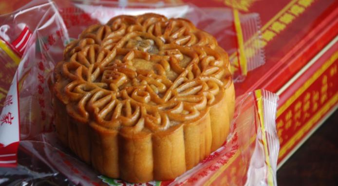

Chinese Moon Cake(Yue Bing)

INGREDIENTS
- 100g flour
- 60g Golden syrup
- 1/2 teaspoon Alkaline water
- 28g Vegetable oil
- 420g Lotus seed paste
- 6 salted egg yolk
- 1 tablespoon Rose-flavoured cooking wine
- mixture of 1 egg yolk and 2 tablespoons egg white
COOKING METHOD
- In a large bowl, mix the golden syrup, alkaline water and oil well. Sift in the flour. Use a spatula to
combine all the ingredients. Knead into a dough. Cover with film wrap and rest for 40 minutes.
- Mix egg yolk with wine. If the salted egg yolks are homemade and freshly broken from shells, you'll see
the egg whites turn opaque after mixing with the wine a few minutes later. Wipe the yolks dry with kitchen
paper. Cut each into two halves. Set aside. Roll the lotus paste into a long tube.
- Cut into 12 equal portions of 35 grams.
- Roll each portion into a ball shape. Set aside and preheat the oven to 180.C.
- Divide the dough into 12 equal portions. Roll each portion into a small ball shape. Cover a dough portion
with a plastic film and roll into a thin disc.
- Poke a hole for each lotus paste ball in the middle with your finger.
- Place the egg yolk inside and roll and shape into a ball. Wrap and seal the paste ball with the dough disc.
- Spray the mooncake mould and place the stuffed mooncake into the mould. Lightly press the mould handle, then
remove the mooncake from the mould. Transfer the stuffed mooncake onto a lined baking tray.
- Repeat this step to finish the remaining dough and lotus paste.
- Bake int the preheated ove for about 10 to 12 minutes. Brush the moon cakes with mixture of egg yolk and
egg white, at about five minutes, before removing from the oven.
- Continue to bake until the pastry turn golden brown. Remove from oven and leave to cool on a wire rack.
- Store in an air-tight container. The pastry will become soft and shiny in one or two days: the mooncake recipe
is ready to be enjoyed.